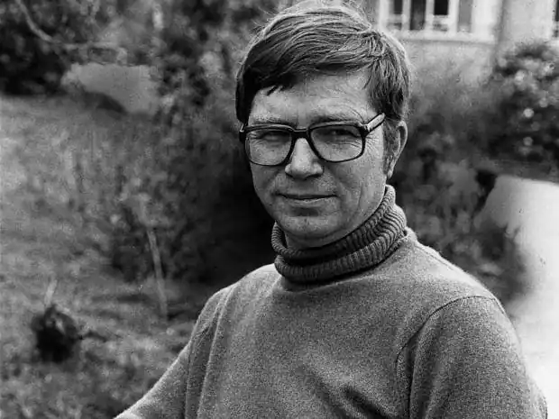
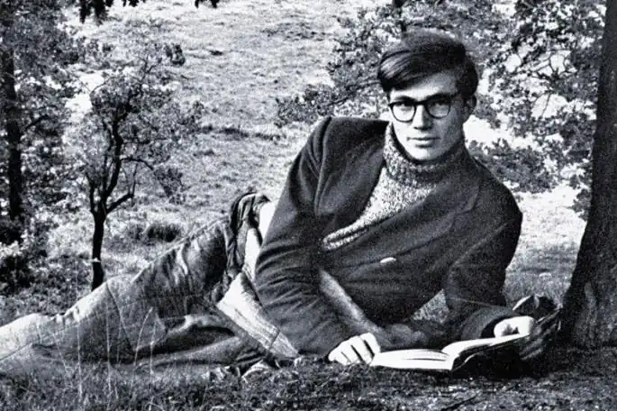

У 1967 р. Колін Вілсон написав один з найвідоміших своїх творів — фантастичний роман "Паразити свідомості" (1967).
Колін Вілсон народився в місті Лестер (графство Лестершир, Великобританія), в 16 років покинув школу, працював на фабриці, потім клерком в місцевому податковому управлінні, служив в Королівських ВПС, продавцем журналів в Парижі, у вільний час, займаючись літературною творчістю.
У 1954 році начинаетзарабатывать собі на життя літературною працею. У 1956 році вийшла його перша книга "Сторонній", яка мала успіх. В кінці 60-х років Вілсон почав читати лекції в університетах. Викладав літературу в США — в Холлинс-коледжі (штат Вірджинія), в Університеті штату Вашингтон у Сіетлі, Університету Ратжерса в Нью-Брансвике (штат Нью-Джерсі), Інституті Середземномор'я на іспанському острові Майорка. У 1967 р. Колін Вілсон написав один з найвідоміших своїх творів — фантастичний роман "Паразити свідомості" (1967). У 1987 році почав писати фантастичну сагу "Світ Павуків".даний час проживає в самоті в своєму котеджі в графстві Корнуолл. Фантастика — не основна область діяльності письменника, Колін Вілсон — автор більш ніж вісімдесяти книг, в галузі літературної критики, музики, кримінології, соціології, історії, сексології, філософії, окультизму.